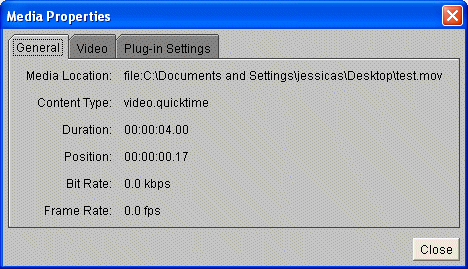
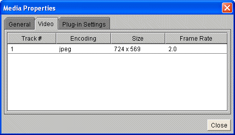
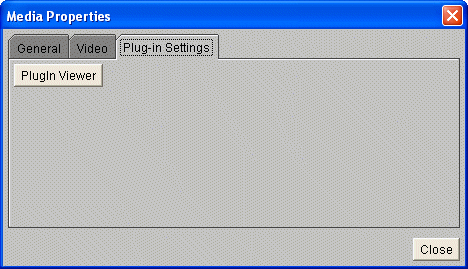

Overview
McIDAS-V can display QuickTime movies. You can pause, single step and play a
movie.
Properties
- Play
 Pause
Pause Step Backward
Step Backward- Step Forward
- Media Properties
Click to start the QuickTime movie.
Click to pause the QuickTime movie.
Click to move backwards a single step in the movie.
Click to move forwards a single step in the movie.
Left-click to bring up the QuickTime media properties. Right-click to change the rate of the movie.
The media properties is composed of three tabs. The first display the general information about the QuickTime movie, including location, duration, and frame rate.

The second lists the specific video information, including encoding type and size.

The third has access to the PlugIn Viewer details.
